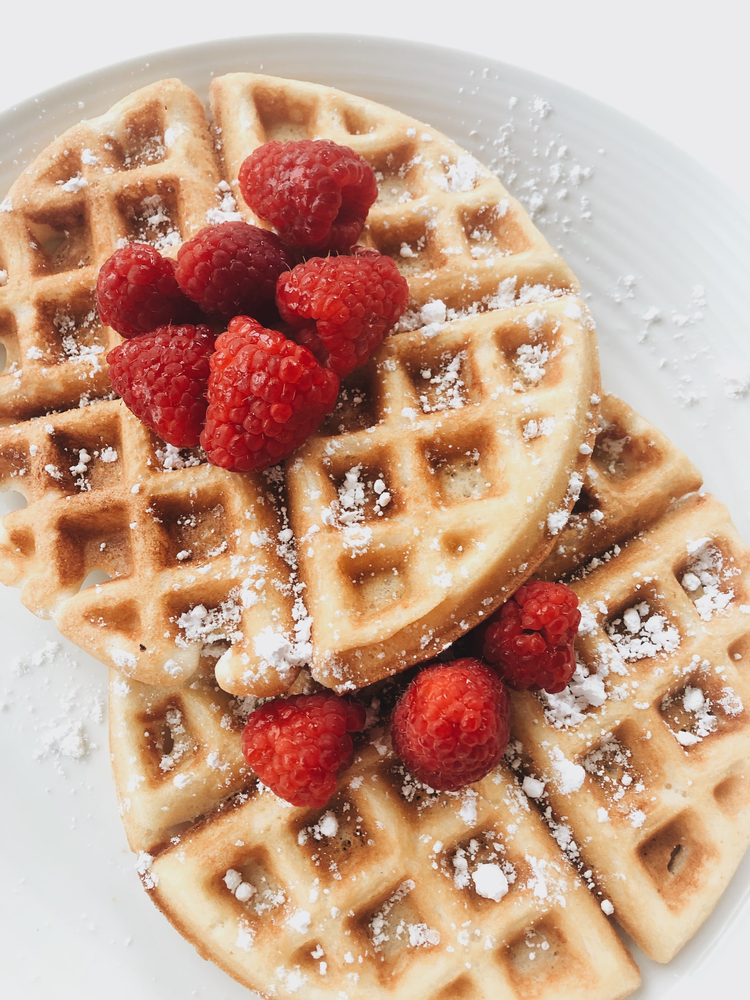

Classic Waffles Recipe

Two Golden Waffles topped with rasperberries and powder sugar. Yum!
Ingredients
- 2 cups all-purpose flour
- 1 teaspoon salt
- 4 teaspoon baking powder
- 2 tablespoons white sugar
- 2 eggs
- 1 1/2 cups warm milk
- 1/3 butter
- 1 teaspoon vanilla extract
Steps
Step 1
In a large bowl, mix together flour, salt, baking powder and sugar; set aside.
Preheat waffle iron to desired temperature.Step 2
In a separate bowl, beat the egss. Stir in milk, butter, and vanilla. Pour
the milk mixture into the flour mixture; beat until blended.Step 3
Ladle the batter into a preheated waffle iron. Cook the waffles unitl golden
and crisp. Serve immediately.